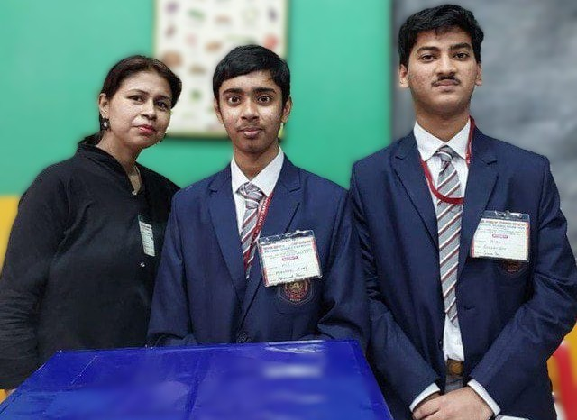
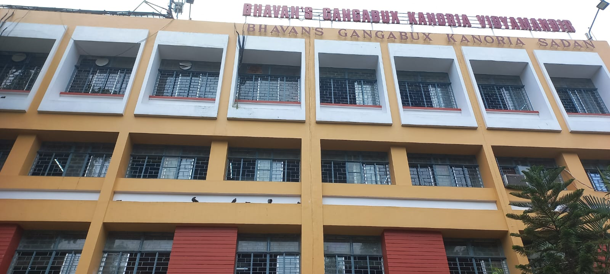

Years: Class 11 – 12
I moved to Kolkata for these crucial two years — a shift driven by my enrollment at the FIITJEE North Kolkata Centre for JEE prep. My heart was always set on ISI, but with the dauntingly low number of seats, preparing for JEE seemed like a rational backup plan.
While many opted for dummy schools with lax schedules, I chose Bhavan's — a school where attendance was taken seriously. That decision paid off. Thanks to incredible teachers who genuinely enjoyed teaching, I ended up clearing most of my basics during school hours itself.
But the academic part was just half the story. What truly shaped my Bhavan's experience was the people — a peer group that believed in collaboration over competition. We helped each other grow, academically and emotionally, steering clear of the toxic rat race.
Though I spent only two years here, the friendships, the laughter, and the quiet support of the faculty have left a permanent mark. Bhavan’s will always be more than just a school — it’s a warm memory that reminds me how right decisions sometimes look like risks.

